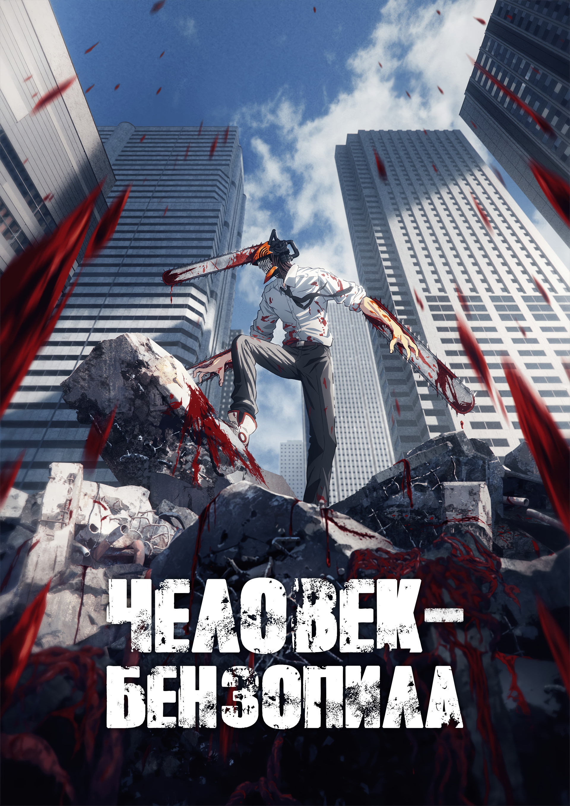
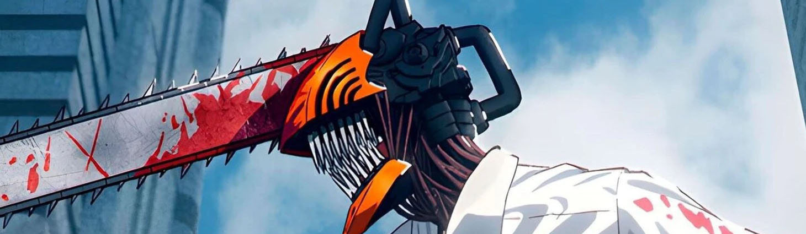
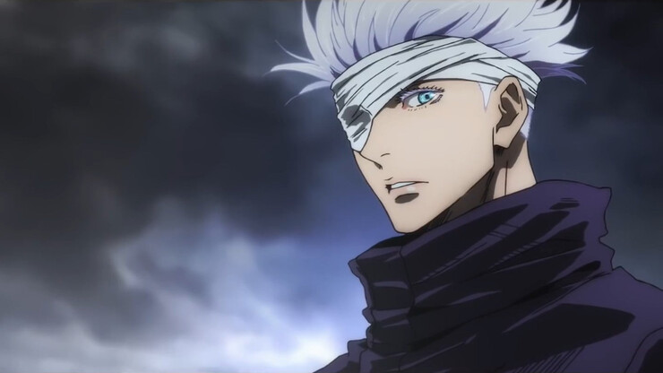
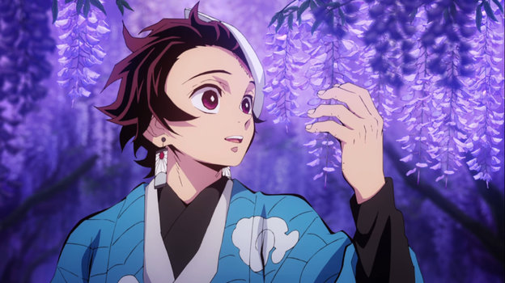
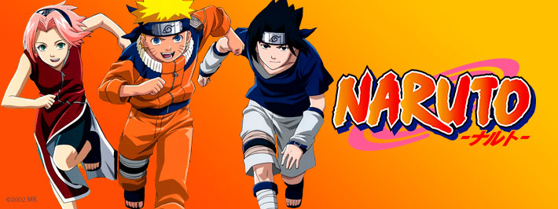
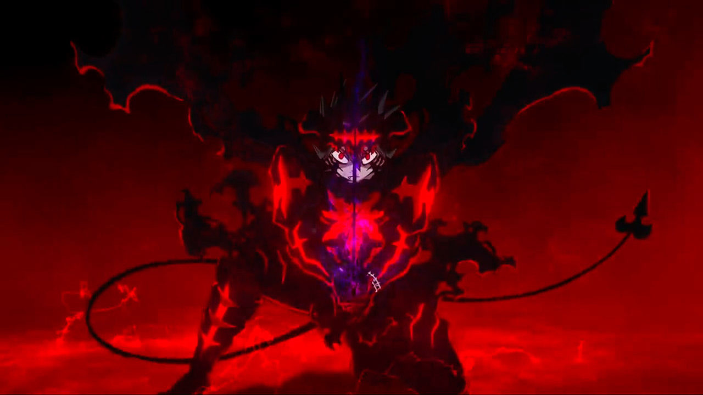
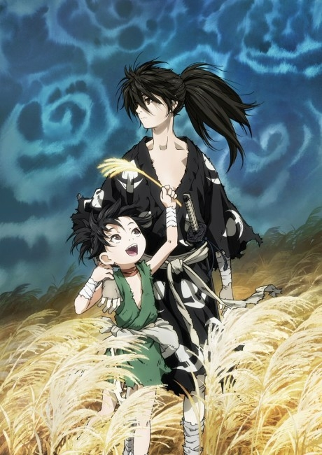
Дороро
«Дороро» — это мрачная и трогательная история о самурае Хяккимару, который в младенчестве был лишён 48 частей тела своим отцом-демоном в обмен на могущество. Теперь он скитается по воюющей стране, сражаясь с демонами, чтобы вернуть своё тело. В его путешествии к нему присоединяется сирота-вор Дороро, и вместе они ищут своё место в этом жестоком мире.
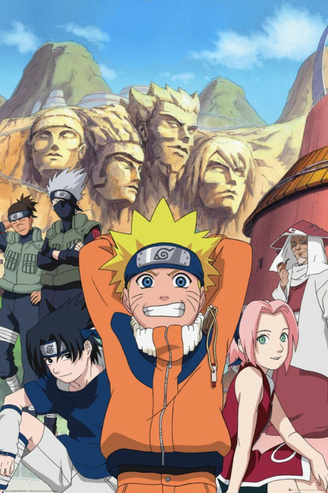
Наруто
Это история о Наруто Узумаки — юном нинде-изгое, который мечтает стать Хокагэ, лидером своей деревни, чтобы все признали его силу. Запечатанный внутри него Девятихвостый Лис-бидзю когда-то навлёк на деревню страшное бедствие. Преодолевая невзгоды, Наруто идёт к своей цели, обретая друзей, верных товарищей и несгибаемую волю.
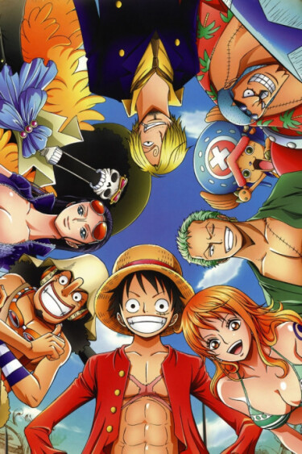
ВанПис
Монки Д. Луффи, весёлый и бесстрашный парень, мечтает найти легендарное сокровище Ван Пис и стать Королём Пиратов. Съев в детстве Дьявольский плод, он получил силу растягиваться как резина, но потерял возможность плавать. Вместе со своей разношёрстной командой Луффи отправляется в опасное плавание по Гранд Лайн, где его ждут невероятные приключения, сильные противники и верные друзья.
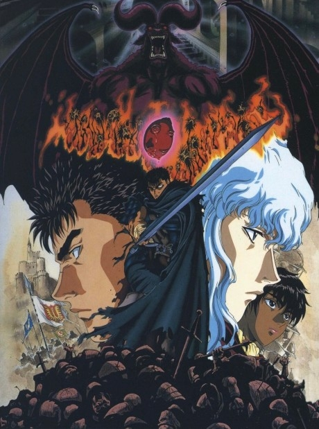
Берсерк
Мрачный и эпический эпос в жанре тёмного фэнтези. Следуйте за Гатсом, одиноким наёмником, отмеченным демонической печатью, который обречён вести вечную борьбу с ужасающими существами из Астрального мира. Его путь — это кровавый поход мести человеку, которого он когда-то считал другом, но который ради власти принёс его и всех его товарищей в жертву.
Атака титанов
Человечество доживает свои последние дни, запершись за тремя гигантскими стенами, которые защищают их от титанов — огромных загадочных существ, пожирающих людей. Юный Эрен Йегер, поклявшийся уничтожить всех титанов после разрушения его родного города, присоединяется к Разведкорпусу, чтобы отвоевать мир у чудовищ. Однако он и представить не мог, что истина о титанах окажется ужаснее, чем можно было вообразить.
Подробнее>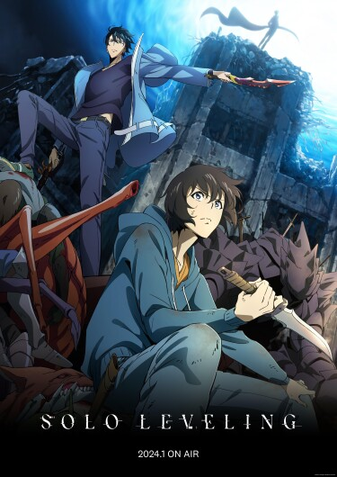
Поднятие уровня в одиночку
Сон Иль-Хан, считавшийся самым слабым охотником в мире, едва выживал в самых низкоуровневых подземельях. Однажды он оказывается запертым в смертельной ловушке, где после прохождения сложнейшего испытания получает уникальную способность — «Систему подъёма уровня». Теперь он может расти в силе, как в компьютерной игре, и у него появляется шанс стать величайшим охотником, пускаясь в самые опасные подземелья в полном одиночестве.
Подробнее>